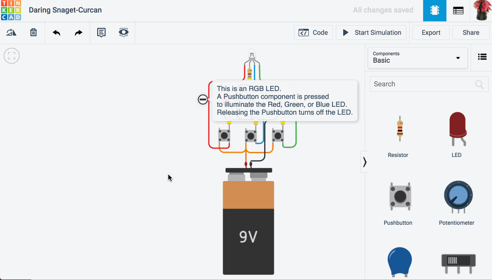

Additionally, the software allows you to add electronic circuits to 3D models in order to create objects with
light and movement. The end result can even be simulated on the software to check how the components will
respond in real life.Various electric component with motherboards including aurdino can be used for circuits and be tested on ths platform

Here is a tutorial video which will help you mto understand how to use Electronics in TinkerCAD: